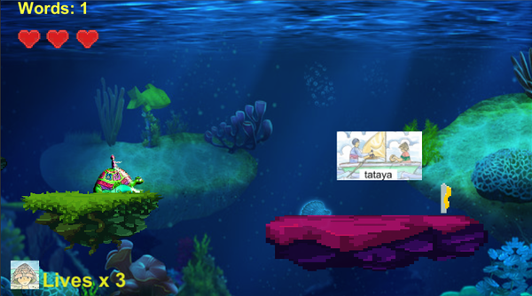

A Collaboration With Sari-Sari Storybooks

Play Phaser Game | Source Code on GitHub
Like its ancestor, Melo The Umang Boy- Phaser Edition is a 2D platformer video game collaboration with the publishing company, Sari-Sari Storybooks. However, after working on the original Unity version, I decided that I wanted to try to make the game mobile-friendly. The functionality is largely the same as the original, only this version was developed using the Phaser.js library.
HTML5, JavaScript, Phaser.js, Affinity Photo (graphics editing), Tiled Tilemap Editor, GitHub
Development Ongoing